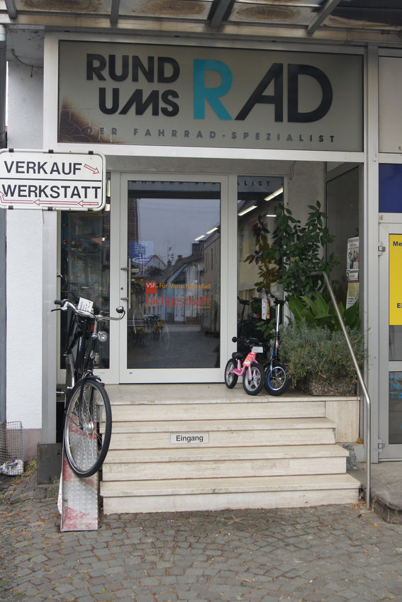

Home |
Produkte |
Über uns |
Kontakt |
Herzlich willkommen bei RUND UMS RAD - Fahrradkultur in Mannheim-Wallstadt. Seit 1989 sind wir Ihr Fahrradspezialist vor Ort. Hier werden Sie individuell, zu allen mit dem Fahrrad zusammenhängenden Fragen beraten. Bei uns werden Sie freundlich und kompetent bedient und erhalten den kompletten technischen Service - Rund ums Rad.
Wir führen Fahrradreparaturen durch, auch an Rädern, die nicht bei uns gekauft wurden. Auch ausgefallene Fahrräder, wie z.B. Liegeräder und Transporträder werden bei uns gewartet und repariert.
Falls die Reparatur einmal länger dauern sollte, dann erhalten Sie von uns auf Wunsch ein Leihrad.
Bei uns werden Sie ausführlich beraten! Beim Fahrradkauf suchen wir gemeinsam das passende Rad für Ihre Bedürfnisse aus. Dabei achten wir darauf, dass Sie bequem in der von Ihnen gewünschten Sitzhaltung auf Ihrem zukünftigen Rad sitzen.
Zur Ergänzung stehen viele verschiedene Sättel, Lenkerformen und Griffe bereit.
Bei trockenen Straßen können Sie unsere Fahrräder auch Probe fahren.
Radeln, falten, mitnehmen – Wir sind autorisierter Fachhändler für die Tern ADFC-VRN-Falträder!
Im Verkehrsverbund Rhein-Neckar (VRN) können sie gefaltet kostenlos in allen Bussen und Bahnen zu jeder Zeit mitgenommen werden!
Mehr dazu hier
Renee Ariane Ortel – 2210413
Kurs INT, Hochschule Mannheim, SS 2022
www.rundumsrad-gmbh.de/fahrraeder.htm
Inhaltlich Verantwortlicher gemäß § 55 Abs. 2 RStV: Michael Schlosser
www.mannheimer-morgen.de/fotos_fotostrecke,-fotostrecke-mein-laden-um-die-ecke-fahrradspezialist-schlosser-_mediagalid,19282.html
www.christianiabikes.de/modelle.html
www.ternbicycles.com/de/
www.google.de/maps/place/Rund+ums+Rad+GmbH/
https://static.deutschlandfunknova.de/editorial/Redaktionskonferenz/Rad_RedaKo_Banner.jpg
www.pd-f.de/pdfgallery/generated/bigpano/f/c/6/30-0562-2019--an-0733.jpg
www.aktivelo.de/media/wysiwyg/pds/71149/e-faltrad-geklappt.jpg
www.puky.de/media/catalog/product/cache/0c6c2facb38fe6324522af979c383bf7/0/0/00004114-1_baseimage.png
https://images.pexels.com/photos/100582/pexels-photo-100582.jpeg?auto=compress&cs=tinysrgb&dpr=1&w=500
www.mein-fahrradhaendler.de/media/image/11/7a/8e/02976439_Victoria_Elektro-Trekkingrad_eTrekking_11-3_1-jpg.jpg
https://upload.wikimedia.org/wikipedia/commons/c/cb/Bionx-creme-bikenest.png
www.campus-bike.de/files/img/ebikes/mtb/bm_29/BM29SUV_Dia_Titansilber_matt_2020_1600x1000.jpg
www.emotion-ebikes.de/wp-content/uploads/2021/09/riese-mueller-swing-city-2022-768x489.jpg
www.christianiabikes.de/modelle.html
https://roland-werk.de/de/fahrradanhaenger/fahrradanhaenger/fahrradanhaenger-roland-big-boy-mit-hochdeichsel-a-500101
www.croozer.com/de/croozer-kid-vaaya-1-jungle-green